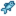

Template:FishLocations Beach
Jump to navigation
Jump to search
| Time | |||||||||||||||||||||
|---|---|---|---|---|---|---|---|---|---|---|---|---|---|---|---|---|---|---|---|---|---|
| 6 | 7 | 8 | 9 | 10 | 11 | 12 | 1 | 2 | 3 | 4 | 5 | 6 | 7 | 8 | 9 | 10 | 11 | 12 | 1 | ||
|  Sardine | |||||||||||||||||||||
| Rainy day only | |||||||||||||||||||||
| 6 | 7 | 8 | 9 | 10 | 11 | 12 | 1 | 2 | 3 | 4 | 5 | 6 | 7 | 8 | 9 | 10 | 11 | 12 | 1 | ||
| Rainy day only | |||||||||||||||||||||
| Sunny day only | |||||||||||||||||||||
| 6 | 7 | 8 | 9 | 10 | 11 | 12 | 1 | 2 | 3 | 4 | 5 | 6 | 7 | 8 | 9 | 10 | 11 | 12 | 1 | ||
| Rainy day only | |||||||||||||||||||||
| Sardine | |||||||||||||||||||||
| Rainy day only | |||||||||||||||||||||
| 6 | 7 | 8 | 9 | 10 | 11 | 12 | 1 | 2 | 3 | 4 | 5 | 6 | 7 | 8 | 9 | 10 | 11 | 12 | 1 | ||
| Sardine | |||||||||||||||||||||
| Rainy day only | |||||||||||||||||||||
Description
This template displays fish locations at the beach.
Use
{{FishLocations Beach}}